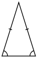
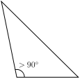
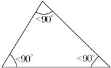

Триъгълник
Триъгълникът е една от основните фигури в геометрията. Представлява двуизмерна фигура, многоъгълник с три страни
и три ъгъла. Може да се дефинира и като част от равнината, ограничена от три точки, нележащи на една права, и
трите отсечки, съединяващи тези точки.
Видове триъгълници
В зависимост от своите страни триъгълникът може да бъде равностранен, равнобедрен и разностранен, а в зависимост
от своите ъгли – правоъгълен, тъпоъгълен и остроъгълен.
Видове триъгълници в зависимост от страните:
- Равностранен триъгълник
 |
Дължините на трите страни са равни. В равностранните триъгълници ъглите също са равни (всеки от тях
е 60°). |
- Равнобедрен триъгълник
|  |
Дължините на две от страните са равни. Двете равни страни се наричат бедра, а третата - основа. Този
триъгълник има 2 равни ъгъла при основата. |
- Разностранен триъгълник
 |
Всичките му страни са с различни дължини. Този триъгълник има три различни ъгъла. |
Видове триъгълници в зависимост от ъглиге - според големината на най-големия си вътрешен ъгъл, триъгълникът може
да бъде:
- правоъгълен триъгълник
 |
Триъгълник, който има един прав ъгъл (равен на 90⁰) и два остри ъгъла. Страната,срещулежаща на
правия ъгъл, се нарича хипотенуза и е най-дългата страна във всеки правоъгълен триъгълник. Другите
две страни се наричат катети. |
- тъпоъгълен триъгълник
|  |
Триъгълник, който има един тъп ъгъл (по-голям от 90⁰) и два остри ъгъла. |
- остроъгълен триъгълник
|  |
Триъгълник, при който всички вътрешни ъгли са по-малки от 90°. |